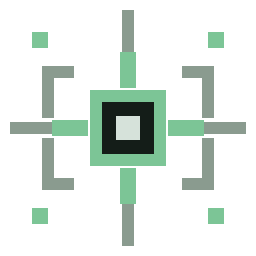
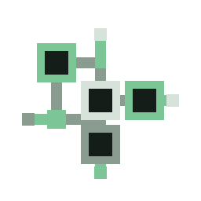
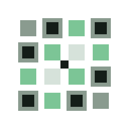
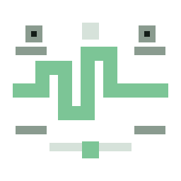
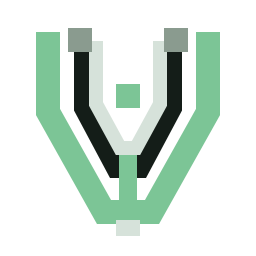

01 Signal Node
Telemetry beacon with a pixel-grid posture. Feels active and system-aware without turning into security branding.
Five SVG-only directions for a local-first system awareness console.

Telemetry beacon with a pixel-grid posture. Feels active and system-aware without turning into security branding.

Connected semantic nodes. This direction emphasizes relationships, grouping, and understanding what exists.

Minimal awareness matrix. The quietest and most pixel-native option, with strong small-size behavior.

Terminal-style signal waveform. Directly suggests telemetry, monitoring, and runtime activity.

Standalone brand sigil. The most app-icon-like direction, built around a bold telemetry aperture.
| Concept | Recognizability | Scalability | Uniqueness | App Icon Suitability |
|---|---|---|---|---|
| 01 Signal Node | High as telemetry/activity. | Strong at small sizes due to bold center block. | Moderate-high; beacon language is familiar but not generic cleanup. | Good, especially for a monitoring-console feel. |
| 02 Data Constellation | High for semantic relationships. | Good, though the smallest nodes may simplify at 16px. | High; reads more like a data map than a utility icon. | Good for branding, slightly less punchy than 05. |
| 03 Watch Grid | Medium; abstract but calm and readable. | Excellent, because every element is a large pixel block. | High; uncommon for desktop utilities. | Very good for a retro workstation identity. |
| 04 System Pulse | High; immediately signals telemetry and system activity. | Strong at 32px+, acceptable at 16px. | Moderate; waveform language is known but fits the product well. | Good, especially if Vigil leans terminal/monitor aesthetic. |
| 05 Vigil Mark | High as a brand mark after one exposure. | Excellent; bold silhouette survives downscaling. | Highest; most proprietary-looking of the set. | Best candidate for app icon exploration. |